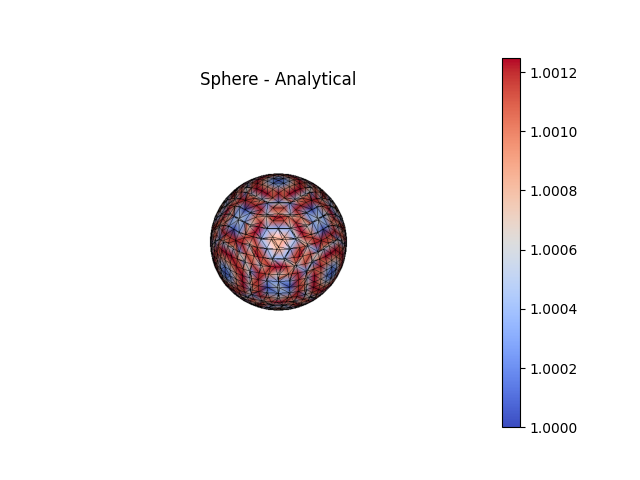

Note
Go to the end to download the full example code.
Curvature Analysis#
The curvature of two unit spheres is measured with both mesh-based and
analytical (implicit function-based) methods. The first sphere is the
direct result of marching cubes, which typically contains low quality
triangles. The second sphere is a smoothed version of the first where nodes
have been redistributed via tangential Laplacian smoothing and moved to lie
more closely to the true surface (see
SurfaceNodeOptimization()).
from mymesh import curvature, implicit
import numpy as np
import matplotlib.pyplot as plt
Sphere = implicit.SurfaceMesh(implicit.sphere([0,0,0], 1), [-1,1,-1,1,-1,1], 0.1)
Sphere.verbose=False
SmoothSphere = implicit.SurfaceNodeOptimization(Sphere, implicit.sphere([0,0,0], 1), 0.1, iterate=10)
SmoothSphere.verbose=False
Curvature calculation#
Curvature can be calculated from the mesh directly or with additional
information if the mesh is implicit function- or image-based. Mesh-based
methods (e.g. CubicFit()) work best on uniform and
high quality meshes but irregular and low quality meshes can introduce
significant errors. Function-based curvatures (e.g.
AnalyticalCurvature()) are generally much more,
accurate, with most of the error arising from interpolation error in the
placement of the nodes onto the surface.
For a sphere, the Principal Curvatures (\(\kappa_1\), \(\kappa_2\))
are theoretically both equal to the inverse of the radius of the sphere.
k1m_sphere, k2m_sphere = curvature.CubicFit(Sphere.NodeCoords, Sphere.NodeConn, Sphere.NodeNeighbors, Sphere.NodeNormals)
k1m_smooth, k2m_smooth = curvature.CubicFit(SmoothSphere.NodeCoords, SmoothSphere.NodeConn, SmoothSphere.NodeNeighbors, SmoothSphere.NodeNormals)
k1a_sphere, k2a_sphere, _, _ = curvature.AnalyticalCurvature(implicit.sphere([0,0,0], 1), Sphere.NodeCoords)
k1a_smooth, k2a_smooth, _, _ = curvature.AnalyticalCurvature(implicit.sphere([0,0,0], 1), SmoothSphere.NodeCoords)
# Plotting:
fig1, ax1 = Sphere.plot(scalars=k1m_sphere, bgcolor='white', show_edges=True, color='coolwarm', show=False, return_fig=True)
ax1.set_title('Sphere - Mesh-based')
fig2, ax2 = SmoothSphere.plot(scalars=k1m_smooth, bgcolor='white', show_edges=True, color='coolwarm', show=False, return_fig=True)
ax2.set_title('Smooth Sphere - Mesh-based')
fig3, ax3 = Sphere.plot(scalars=k1a_sphere, bgcolor='white', show_edges=True, color='coolwarm', show=False, return_fig=True)
ax3.set_title('Sphere - Analytical')
fig4, ax4 = SmoothSphere.plot(scalars=k1a_smooth, bgcolor='white', show_edges=True, color='coolwarm', show=False, return_fig=True)
ax4.set_title('Smooth Sphere - Analytical')

- 
/home/runner/work/mymesh/mymesh/src/mymesh/utils.py:595: RuntimeWarning: invalid value encountered in arccos
alpha = np.arccos(cosAlpha, out=np.nan*np.ones_like(cosAlpha), where=(cosAlpha>=-1)|(cosAlpha<=1))*Masknan
/home/runner/work/mymesh/mymesh/src/mymesh/curvature.py:501: NumbaPerformanceWarning: np.dot() is faster on contiguous arrays, called on (Array(float64, 2, 'F', False, aligned=True), Array(float64, 2, 'A', False, aligned=True))
MaxPrincipalDirection = np.dot(np.linalg.inv(R[:3,:3]), np.append(x[:,np.argmax(v)],0)[:,None])[:,0]
/home/runner/work/mymesh/mymesh/src/mymesh/utils.py:595: RuntimeWarning: invalid value encountered in arccos
alpha = np.arccos(cosAlpha, out=np.nan*np.ones_like(cosAlpha), where=(cosAlpha>=-1)|(cosAlpha<=1))*Masknan
RFBOutputContext()
RFBOutputContext()
RFBOutputContext()
RFBOutputContext()
Error Measurement#
To compare how the two methods performed on the two spheres, the root mean square deviation (RMSD) can be calculate to see how much the measured curvatures deviate from the true curvature of 1 mm -1.
RMSD_k1m_sphere = np.sqrt(1/len(k1m_sphere) * np.sum((np.array(k1m_sphere) - 1)**2))
RMSD_k1m_smooth = np.sqrt(1/len(k1m_smooth) * np.sum((np.array(k1m_smooth) - 1)**2))
RMSD_k1a_sphere = np.sqrt(1/len(k1a_sphere) * np.sum((np.array(k1a_sphere) - 1)**2))
RMSD_k1a_smooth = np.sqrt(1/len(k1a_smooth) * np.sum((np.array(k1a_smooth) - 1)**2))
width = 0.35
fig, ax = plt.subplots()
ax.bar([-width/2, 1-width/2], [RMSD_k1m_sphere, RMSD_k1a_sphere], width, label='Sphere')
ax.bar([+width/2,1+width/2], [RMSD_k1m_smooth, RMSD_k1a_smooth], width, label='Smooth Sphere')
ax.set_yscale('log')
ax.set_ylabel('Root mean square error')
ax.set_xticks([0,1])
ax.set_xticklabels(['Mesh-based', 'Analytical'])
ax.legend()
ax.set_ylim([10**-4, 10**1])
plt.show()
Total running time of the script: (0 minutes 22.055 seconds)